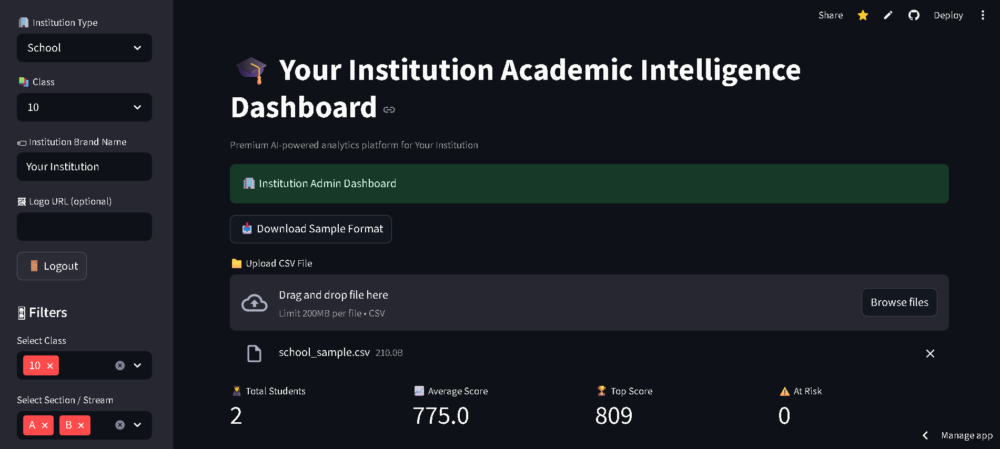

Featured Projects

AI Academic Dashboard
Built a KPI-driven analytics system with forecasting to identify at-risk students and improve academic decision-making.

Zyvro AI Product Finder
Developed an AI tool to identify high-demand Amazon products using keyword scoring and market trend analysis.

Washly Go
Designed and developed a SaaS platform for car wash booking with customer workflows, scheduling, and service management.